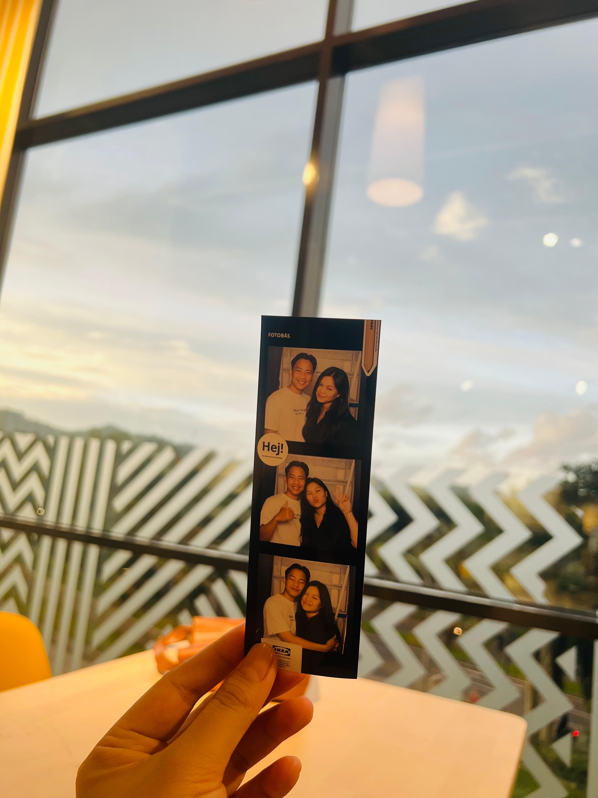

Hi Budok.
Apa kabar? hehe
Semoga baik selalu ya
Kemungkinan besar hari ini kamu akan banyak melihat di social media kamu orang-orang saling bertukar cokelat ataupun bunga.
Maafin aku ya sayang valentine kali ini aku belum bisa kasih apa-apa.
Mungkin kamu akan berpikir "ihh gapapa mas gausah minta maaf"
tapi di hari yang special ini siapa sih yang gamau dapet bunga atau cokelat dari pacarnya?
Aku pun sedih karena keterbatasan aku jadi belum bisa kasih apa-apa bahkan di hari ulang tahun kamu.
Tapi, hari ini aku langitkan semua doa terbaik aku untuk kamu.
Semoga hal-hal yang membuat kamu runtuh turut menjadi alasan kamu untuk tumbuh.
Semoga dunia senantiasa menjaga kamu dimana pun kamu berada.
Semoga hari-hari kamu selalu diiringi cinta yang tidak pernah ada batasnya.
Dan semoga, senyum Mama dan Joshua yang selalu kamu usahakan itu kini sudah terlaksana.
Dan untuk menggantikan cokelat dan bunga aku juga mau kasih kamu puisi.
Kalau mendung hitam sudah diatas kepala,
jangan larang hujan turun ke bumi.
Kalau angin bertiup dengan kencangnya,
jangan larang daun-daun kering berguguran.
Kalau senyummu selalu mekar dalam hatiku,
jangan larang aku untuk tetap setia dan rindu padamu.
Kelazz gaa? haha.
So selamat hari kasih sayang untuk kamu yang tersayang. ♥
Peluk Erat,
Masfall Pacar kamu yang jauh ini